第 3 章 多项式¶
Chapitre n°3 — Polynômes
阅读说明
每段先列法语原文；其下缩进、带深蓝竖条的小字号段落为中文翻译。加粗为关键词，括号内为中文释义。
Objectifs 学习目标¶
-
Manipuler des polynômes.
熟练操作多项式。
-
Factoriser des polynômes à l'aide de leurs racines.
利用多项式的根对多项式进行因式分解。
-
Décomposer des fractions rationnelles en éléments simples.
将有理分式分解为部分分式（éléments simples）。
Notations 记号¶
On rappelle que \(\mathbb{N}\) désigne l'ensemble des entiers naturels, \(\mathbb{R}\) désigne l'ensemble des nombres réels et \(\mathbb{C}\) désigne l'ensemble des nombres complexes. Dans ce chapitre, \(\mathbb{K}\) désigne \(\mathbb{R}\) ou \(\mathbb{C}\).
回忆：\(\mathbb{N}\) 表示自然数集，\(\mathbb{R}\) 表示实数集，\(\mathbb{C}\) 表示复数集。本章中，\(\mathbb{K}\) 表示 \(\mathbb{R}\) 或 \(\mathbb{C}\)。
1 Polynômes 多项式¶
Définition 1.1 : polynôme
定义 1.1：多项式（polynôme）
Un polynôme est une suite \((a_n)_{n\geqslant 0}\in\mathbb{K}^{\mathbb{N}}\) dont tous les termes sont nuls à partir d'un certain rang :
多项式（polynôme）是一个序列 \((a_n)_{n\geqslant 0}\in\mathbb{K}^{\mathbb{N}}\)，其所有项从某一项起均为零：
Le polynôme est alors noté :
该多项式则记为：
où \(X\) est un symbole mathématique. Les termes de la suite \((a_0,a_1,a_2,\dots)\in\mathbb{K}^{\mathbb{N}}\) sont appelés les coefficients du polynôme \(P\), en particulier le premier terme \(a_0\) est appelé le coefficient constant de \(P\). On note \(\mathbb{K}[X]\) l'ensemble des polynômes.
其中 \(X\) 是一个数学符号。序列 \((a_0,a_1,a_2,\dots)\in\mathbb{K}^{\mathbb{N}}\) 的各项称为多项式 \(P\) 的系数（coefficients），特别地，第一项 \(a_0\) 称为 \(P\) 的常数项（coefficient constant）。所有多项式的集合记为 \(\mathbb{K}[X]\)。
Exemple 1.2
例 1.2
-
\(1-\pi X+\frac{1}{2}X^{888}\in\mathbb{R}[X]\) et \((1-i)X^2+X^6-jX^8\in\mathbb{C}[X]\).
\(1-\pi X+\frac{1}{2}X^{888}\in\mathbb{R}[X]\)，且 \((1-i)X^2+X^6-jX^8\in\mathbb{C}[X]\)。
-
Puisque \(\mathbb{R}\subset\mathbb{C}\), on a \(\mathbb{R}[X]\subset\mathbb{C}[X]\).
由于 \(\mathbb{R}\subset\mathbb{C}\)，故有 \(\mathbb{R}[X]\subset\mathbb{C}[X]\)。
-
Tout nombre \(a\in\mathbb{K}\) peut être vu comme le polynôme constant \(P=a\in\mathbb{K}[X]\) qui correspond à la suite \((a,0,0,0,\dots)\in\mathbb{K}^{\mathbb{N}}\). Autrement dit, \(\mathbb{K}\subset\mathbb{K}[X]\). En particulier, \(0\) est un polynôme, appelé le polynôme nul.
任意数 \(a\in\mathbb{K}\) 都可看作常数多项式（polynôme constant）\(P=a\in\mathbb{K}[X]\)，它对应序列 \((a,0,0,0,\dots)\in\mathbb{K}^{\mathbb{N}}\)。换言之，\(\mathbb{K}\subset\mathbb{K}[X]\)。特别地，\(0\) 是一个多项式，称为零多项式（polynôme nul）。
-
\(X\) est un polynôme qui correspond à la suite \((0,1,0,0,0,\dots)\in\mathbb{K}^{\mathbb{N}}\).
\(X\) 是一个多项式，对应序列 \((0,1,0,0,0,\dots)\in\mathbb{K}^{\mathbb{N}}\)。
Important
要点
Par définition, deux polynômes sont égaux si et seulement si leurs coefficients de même indice sont égaux. Plus précisément, pour tout \(P=\sum_{n=0}^{N_P}a_nX^n\in\mathbb{K}[X]\) et tout \(Q=\sum_{n=0}^{N_Q}b_nX^n\in\mathbb{K}[X]\) :
按定义，两个多项式相等当且仅当它们同一下标的系数相等。更确切地说，对任意 \(P=\sum_{n=0}^{N_P}a_nX^n\in\mathbb{K}[X]\) 与 \(Q=\sum_{n=0}^{N_Q}b_nX^n\in\mathbb{K}[X]\)：
Cette méthode, souvent utilisée en pratique, s'appelle l'identification des coefficients.
这种方法在实践中经常使用，称为系数比较法（identification des coefficients）。
Définition 1.3 : opérations avec les polynômes
定义 1.3：多项式的运算
L'ensemble \(\mathbb{K}[X]\) est muni d'une addition et d'une multiplication définies pour tout \(P=\sum_{n=0}^{N_P}a_nX^n\in\mathbb{K}[X]\) et tout \(Q=\sum_{n=0}^{N_Q}b_nX^n\in\mathbb{K}[X]\) par :
集合 \(\mathbb{K}[X]\) 上定义了加法（addition）与乘法（multiplication），对任意 \(P=\sum_{n=0}^{N_P}a_nX^n\in\mathbb{K}[X]\) 与 \(Q=\sum_{n=0}^{N_Q}b_nX^n\in\mathbb{K}[X]\)，定义为：
Exemple 1.4
例 1.4
-
\(\displaystyle (1+\sqrt{2}X+X^2)(1-\sqrt{2}X+X^2) = \left( \begin{matrix} 1+(-\sqrt{2}+\sqrt{2})X\\ +(1-2+1)X^2\\ +(0+\sqrt{2}-\sqrt{2}+0)X^3\\ +(0+0+1+0+0)X^4 \end{matrix} \right) =1+X^4.\)
-
Pour des polynômes constants \(P=a\in\mathbb{K}\) et \(Q=b\in\mathbb{K}\), on retrouve l'addition et la multiplication des nombres :
对于常数多项式 \(P=a\in\mathbb{K}\) 与 \(Q=b\in\mathbb{K}\)，我们重新得到了数的加法与乘法：
\[ \left\{ \begin{aligned} P+Q &= (a+0X+0X^2+\dots)+(b+0X+0X^2+\dots)\\ &= (a+b)+0X+0X^2+\cdots=a+b,\\ PQ &= (a+0X+0X^2+\dots)(b+0X+0X^2+\dots)\\ &= ab+(0+0)X+(0+0+0)X^2+\cdots=ab. \end{aligned} \right. \] -
Pour tout \((m,n)\in\mathbb{N}^2\), on a :
对任意 \((m,n)\in\mathbb{N}^2\)，有：
\[ \begin{aligned} X^mX^n &= \left(\sum_{i=0}^{m}a_iX^i\right)\left(\sum_{j=0}^{n}b_jX^j\right) \quad\text{où } a_i=\begin{cases}1 & \text{si } i=m\\ 0 & \text{sinon}\end{cases} \quad\text{et } b_j=\begin{cases}1 & \text{si } j=n\\ 0 & \text{sinon}\end{cases}\\ &= \sum_{k=0}^{m+n}\left(\sum_{i=0}^{k}a_ib_{k-i}\right)X^k \quad\text{où } a_ib_{k-i}=\begin{cases}1 & \text{si } i=m \text{ et } k-i=n\\ 0 & \text{sinon}\end{cases}\\ &= X^{m+n}. \end{aligned} \] -
On peut montrer par récurrence que : \(\forall n\in\mathbb{N},\ (X)^n=X^n\).
可以用归纳法证明：\(\forall n\in\mathbb{N},\ (X)^n=X^n\)。
Propriété 1.5
性质 1.5
Comme pour les nombres (réels ou complexes), l'addition et la multiplication de polynômes ont les mêmes propriétés algébriques : l'associativité, la commutativité et la distributivité.
与（实或复）数一样，多项式的加法与乘法具有相同的代数性质：结合律（associativité）、交换律（commutativité）与分配律（distributivité）。
En particulier, on rappelle le résultat suivant qui se généralise aux polynômes.
特别地，我们回忆以下结果，它可推广到多项式。
Théorème 1.6 : formule du binôme de Newton
定理 1.6：牛顿二项式公式
Pour tout \(P\in\mathbb{K}[X]\) et tout \(Q\in\mathbb{K}[X]\) :
对任意 \(P\in\mathbb{K}[X]\) 与 \(Q\in\mathbb{K}[X]\)：

On rappelle également que les coefficients binomiaux vérifient la relation de récurrence (avec la convention \(\binom{n}{k}=0\) si \(k>n\)) :
我们还回忆，二项式系数（coefficients binomiaux）满足递推关系（采用约定：当 \(k>n\) 时 \(\binom{n}{k}=0\)）：
On peut donc les calculer à l'aide du triangle de Pascal.
因此可以借助帕斯卡三角形（triangle de Pascal）计算它们。
Vocabulaire clé
重点词汇
- polynôme：多项式
- coefficient / coefficient constant：系数 / 常数项
- polynôme constant / polynôme nul：常数多项式 / 零多项式
- identification des coefficients：系数比较法
- on note …：记作……
- si et seulement si：当且仅当
- autrement dit：换言之
- en particulier：特别地
2 Fonctions polynomiales 多项式函数¶
Définition 2.1 : fonction polynomiale
定义 2.1：多项式函数（fonction polynomiale）
Une fonction \(f:\mathscr{D}_f\to\mathbb{K}\) définie sur \(\mathscr{D}_f\subset\mathbb{K}\) est dite polynomiale lorsqu'il existe un polynôme \(P=\sum_{n=0}^{N}a_nX^n\in\mathbb{K}[X]\) tel que :
定义在 \(\mathscr{D}_f\subset\mathbb{K}\) 上的函数 \(f:\mathscr{D}_f\to\mathbb{K}\) 称为多项式函数（fonction polynomiale），若存在多项式 \(P=\sum_{n=0}^{N}a_nX^n\in\mathbb{K}[X]\) 使得：
Attention
注意
Une fonction polynomiale n'est pas nécessairement définie sur tout \(\mathbb{K}\) !
多项式函数不一定在整个 \(\mathbb{K}\) 上有定义！
Exemple 2.2
例 2.2
-
\(x\mapsto\cos(\arccos(x))\) est une fonction polynomiale définie sur \([-1,1]\) car :
\(x\mapsto\cos(\arccos(x))\) 是定义在 \([-1,1]\) 上的多项式函数，因为：
\[ \forall x\in[-1,1],\quad \cos\bigl(\arccos(x)\bigr)=x. \] -
\(x\mapsto|x|\) est une fonction définie sur \(\mathbb{R}\) qui n'est pas polynomiale (car non dérivable en 0).
\(x\mapsto|x|\) 是定义在 \(\mathbb{R}\) 上的函数，但它不是多项式函数（因为在 \(0\) 处不可导）。
-
Pour tout \(n\in\mathbb{N}^*\), \(z\mapsto\frac{z^n-1}{z-1}\) est une fonction polynomiale définie sur \(\mathbb{C}\setminus\{1\}\) car :
对任意 \(n\in\mathbb{N}^*\)，\(z\mapsto\frac{z^n-1}{z-1}\) 是定义在 \(\mathbb{C}\setminus\{1\}\) 上的多项式函数，因为：
\[ \forall z\in\mathbb{C}\setminus\{1\},\quad \frac{z^n-1}{z-1}=1+z+z^2+\cdots+z^{n-1}. \]
Définition 2.3 : composition
定义 2.3：复合（composition）
L'ensemble \(\mathbb{K}[X]\) est muni d'une composition définie comme pour les fonctions, c'est-à-dire pour tout \(P=\sum_{n=0}^{N}a_nX^n\in\mathbb{K}[X]\) et tout \(Q\in\mathbb{K}[X]\) :
集合 \(\mathbb{K}[X]\) 上定义了复合（composition），其定义方式与函数的复合相同，即对任意 \(P=\sum_{n=0}^{N}a_nX^n\in\mathbb{K}[X]\) 与 \(Q\in\mathbb{K}[X]\)：
Exemple 2.4
例 2.4
Si \(P=1+X^3\) et \(Q=1-X^2\) alors \(P\circ Q=1+(1-X^2)^3=2-3X^2+3X^4-X^6\) et \(Q\circ P=1-(1+X^3)^2=-2X^3-X^6\). En particulier, la composition n'est pas commutative.
若 \(P=1+X^3\) 且 \(Q=1-X^2\)，则 \(P\circ Q=1+(1-X^2)^3=2-3X^2+3X^4-X^6\)，且 \(Q\circ P=1-(1+X^3)^2=-2X^3-X^6\)。特别地，复合不满足交换律。
Définition 2.5 : dérivation
定义 2.5：求导（dérivation）
Pour tout polynôme \(P=\sum_{n=0}^{N}a_nX^n\in\mathbb{K}[X]\), on définit son polynôme dérivé par :
对任意多项式 \(P=\sum_{n=0}^{N}a_nX^n\in\mathbb{K}[X]\)，定义其导多项式（polynôme dérivé）为：
On peut dériver plusieurs fois : pour tout \(k\in\mathbb{N}\), on note \(P^{(k)}\) le polynôme dérivé \(k\) fois qui est défini par \(P^{(0)}=P\) et la relation de récurrence \(P^{(k+1)}=(P^{(k)})'\).
可以多次求导：对任意 \(k\in\mathbb{N}\)，记 \(P^{(k)}\) 为求导 \(k\) 次所得的多项式，它由 \(P^{(0)}=P\) 与递推关系 \(P^{(k+1)}=(P^{(k)})'\) 定义。
On retrouve les formules classiques de dérivation des fonctions réelles.
我们由此重新得到实函数求导的经典公式。
Propriété 2.6
性质 2.6
Pour tout \((P,Q)\in\mathbb{K}[X]^2\) :
对任意 \((P,Q)\in\mathbb{K}[X]^2\)：
On peut exprimer les coefficients d'un polynôme à l'aide de ses dérivées en 0. Plus généralement, on a le résultat suivant.
可以用多项式在 \(0\) 处的各阶导数来表示其系数。更一般地，有如下结果。
Théorème 2.7 : formule de Taylor pour les polynômes
定理 2.7：多项式的泰勒公式
Soient \(P=\sum_{n=0}^{N}a_nX^n\in\mathbb{K}[X]\) et \(a\in\mathbb{K}\). Alors :
设 \(P=\sum_{n=0}^{N}a_nX^n\in\mathbb{K}[X]\) 且 \(a\in\mathbb{K}\)。则：
En particulier : \(\forall n\in\mathbb{N},\ a_n=\frac{P^{(n)}(0)}{n!}\).
特别地：\(\forall n\in\mathbb{N},\ a_n=\frac{P^{(n)}(0)}{n!}\)。
Démonstration. On pose \(Q=P(X+a)=\sum_{n=0}^{N}b_nX^n\). Ainsi :
证明. 令 \(Q=P(X+a)=\sum_{n=0}^{N}b_nX^n\)。于是：
Lemme 2.8
引理 2.8
即：单项式 \(X^n\) 求导 \(k\) 次，当 \(k\leqslant n\) 时得到 \(\frac{n!}{(n-k)!}X^{n-k}\)，否则为 \(0\)。
D'après le lemme, on a :
根据该引理，有：
Par conséquent :
因此：
∎
Vocabulaire clé
重点词汇
- fonction polynomiale：多项式函数
- composition：复合
- polynôme dérivé / dériver：导多项式 / 求导
- on pose …：令……
- tel que：使得
- on retrouve：重新得到
- d'après le lemme：根据引理
- par conséquent：因此
3 Degré 次数¶
Définition 3.1 : degré d'un polynôme
定义 3.1：多项式的次数（degré）
Soit \(P=\sum_{n=0}^{N}a_nX^n\in\mathbb{K}[X]\). Si \(P\neq0\) alors il existe un unique entier \(\deg(P)\in\mathbb{N}\), appelé le degré de \(P\), tel que :
设 \(P=\sum_{n=0}^{N}a_nX^n\in\mathbb{K}[X]\)。若 \(P\neq0\)，则存在唯一的整数 \(\deg(P)\in\mathbb{N}\)，称为 \(P\) 的次数（degré），使得：
Si \(P=0\), on utilise la convention \(\deg(0)=-\infty\). Pour tout \(n\in\mathbb{N}\), on note \(\mathbb{K}_n[X]\) l'ensemble des polynômes de degré inférieur ou égal à \(n\) (y compris le polynôme nul).
若 \(P=0\)，采用约定 \(\deg(0)=-\infty\)。对任意 \(n\in\mathbb{N}\)，记 \(\mathbb{K}_n[X]\) 为次数小于或等于 \(n\) 的多项式（包括零多项式）的集合。
Autrement dit, si \(P\neq0\) alors \(\deg(P)=\max\{n\in\mathbb{N}\mid a_n\neq0\}\).
换言之，若 \(P\neq0\)，则 \(\deg(P)=\max\{n\in\mathbb{N}\mid a_n\neq0\}\)。
Exemple 3.2
例 3.2
-
\(\deg(0)=-\infty\), \(\deg(5)=0\), \(\deg(6X^7-3X^8+0X^9)=8\) et \(\forall n\in\mathbb{N},\ \deg(X^n)=n\).
\(\deg(0)=-\infty\)，\(\deg(5)=0\)，\(\deg(6X^7-3X^8+0X^9)=8\)，且 \(\forall n\in\mathbb{N},\ \deg(X^n)=n\)。
-
\(\mathbb{K}_0[X]\) est l'ensemble des polynômes constants.
\(\mathbb{K}_0[X]\) 是常数多项式的集合。
Définition 3.3 : coefficient dominant
定义 3.3：首项系数（coefficient dominant）
Soit \(P\in\mathbb{K}[X]\setminus\{0\}\). Le coefficient d'indice \(\deg(P)\) de \(P\) est appelé son coefficient dominant. De plus, on dit que \(P\) est unitaire lorsque son coefficient dominant est égal à 1.
设 \(P\in\mathbb{K}[X]\setminus\{0\}\)。\(P\) 中下标为 \(\deg(P)\) 的系数称为它的首项系数（coefficient dominant）。此外，若首项系数等于 1，则称 \(P\) 是首一的（unitaire）。
Propriété 3.4
性质 3.4
-
\(\forall(P,Q)\in\mathbb{K}[X]^2\), \(\deg(P+Q)\leqslant\max\bigl\{\deg(P),\deg(Q)\bigr\}\) avec égalité si \(\deg(P)\neq\deg(Q)\),
对任意 \((P,Q)\in\mathbb{K}[X]^2\)，\(\deg(P+Q)\leqslant\max\{\deg(P),\deg(Q)\}\)，且当 \(\deg(P)\neq\deg(Q)\) 时取等号，
-
\(\forall(P,Q)\in\mathbb{K}[X]^2\), \(\deg(PQ)=\deg(P)+\deg(Q)\),
对任意 \((P,Q)\in\mathbb{K}[X]^2\)，\(\deg(PQ)=\deg(P)+\deg(Q)\)，
-
\(\forall(P,Q)\in\mathbb{K}[X]^2\), \(\deg(Q)\geqslant1\implies\deg(P\circ Q)=\deg(P)\deg(Q)\),
对任意 \((P,Q)\in\mathbb{K}[X]^2\)，\(\deg(Q)\geqslant1\implies\deg(P\circ Q)=\deg(P)\deg(Q)\)，
-
\(\forall(P,k)\in\mathbb{K}[X]\times\mathbb{N}\), \(\deg(P^{(k)})=\begin{cases}\deg(P)-k & \text{si } \deg(P)\geqslant k,\\ -\infty & \text{sinon}.\end{cases}\)
对任意 \((P,k)\in\mathbb{K}[X]\times\mathbb{N}\)，\(\deg(P^{(k)})=\begin{cases}\deg(P)-k & \text{若 } \deg(P)\geqslant k,\\ -\infty & \text{否则}.\end{cases}\)
-
Si \(\deg(P)=\deg(Q)\in\mathbb{N}\) alors \(\deg(P+Q)=\deg(P)=\deg(Q)\) si et seulement si la somme des coefficients dominants de \(P\) et \(Q\) n'est pas égale à 0.
若 \(\deg(P)=\deg(Q)\in\mathbb{N}\)，则 \(\deg(P+Q)=\deg(P)=\deg(Q)\) 当且仅当 \(P\) 与 \(Q\) 的首项系数之和不等于 0。
-
Si \(\deg(Q)<1\), donc \(Q=b\in\mathbb{K}\) est un polynôme constant, alors \(\deg(P\circ Q)=\deg(P(b))\) est égal à 0 si \(P(b)\neq0\) et à \(-\infty\) si \(P(b)=0\).
若 \(\deg(Q)<1\)，即 \(Q=b\in\mathbb{K}\) 是常数多项式，则 \(\deg(P\circ Q)=\deg(P(b))\)：当 \(P(b)\neq0\) 时等于 0，当 \(P(b)=0\) 时等于 \(-\infty\)。
Théorème 3.5 : intégrité dans \(\mathbb{K}[X]\)
定理 3.5：\(\mathbb{K}[X]\) 的整性
即：两个多项式之积为零，当且仅当其中至少有一个为零。
Démonstration.
证明. 即：若乘积为零，则其次数为 \(-\infty\)，故两个多项式的次数中至少一个为 \(-\infty\)，从而至少一个多项式为零。
∎
Remarque
注
L'intégrité dans \(\mathbb{K}[X]\) est une propriété remarquable des polynômes. En effet, il n'y a pas d'intégrité dans l'ensemble des fonctions. Par exemple, \(f:x\mapsto|x|+x\) et \(g:x\mapsto|x|-x\) ne sont pas égales à la fonction constante égale à 0 (car \(f(1)=g(-1)=2\neq0\)) alors que :
\(\mathbb{K}[X]\) 中的整性（intégrité）是多项式的一个显著性质。事实上，函数集合中并不具有整性。例如，\(f:x\mapsto|x|+x\) 与 \(g:x\mapsto|x|-x\) 都不等于恒为零的常函数（因为 \(f(1)=g(-1)=2\neq0\)），然而：
Vocabulaire clé
重点词汇
- degré d'un polynôme：多项式的次数
- coefficient dominant：首项系数
- polynôme unitaire：首一多项式
- intégrité：整性
- avec égalité si …：当……时取等号
- si et seulement si：当且仅当
- autrement dit：换言之